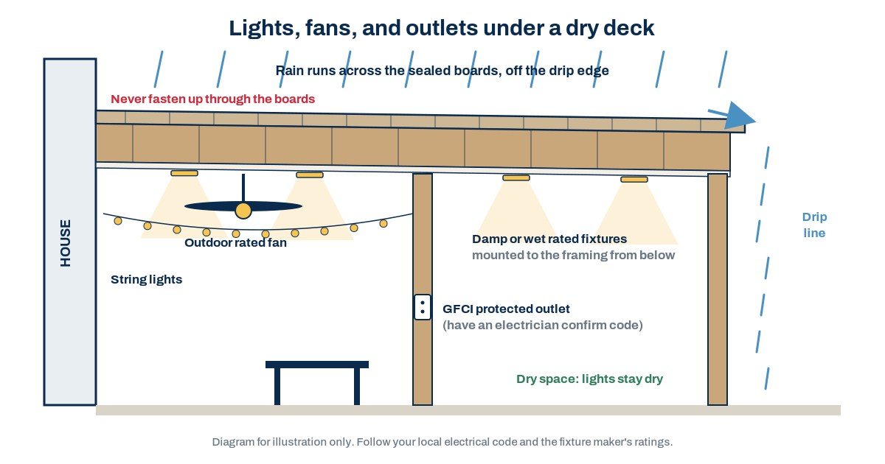

Once the space under a deck becomes a patio, a lounge, or an outdoor kitchen, lighting is usually the next question. Can you hang lights under there? What about a ceiling fan, or an outlet for a TV?
You can. The bigger question is whether the space stays dry. Here is why that matters, the most popular lighting ideas, and the planning details to settle before any wiring goes in.
Lights, fans, and outlets under a deck are common, but on a regular gapped deck rain drips through every board onto the fixtures. On an AmeriDex deck the sealed surface sheds rain off the drip edge, so the space below stays dry. Use fixtures rated for the location, mount everything from below, and have a licensed electrician do the wiring.
Why lighting under a deck starts with a dry space
On a standard deck, every board gap lets rain fall straight through. Fixtures, boxes, and wire runs underneath get wet every time it rains, and the drips land on whoever is sitting below. That is why many under-deck spaces end up with nothing more than a single bulb by the door. If water is already dripping through, see why water drips through deck boards.
On an AmeriDex deck, the boards lock onto the Dexerdry seal between every board, so the surface sheds water like a roof. Rain runs across the top, which is pitched at least 1/8 inch per foot away from the house, and drops off the drip edge. With dry framing overhead, you can plan the space below like a covered porch. See how the system works.
Six under deck lighting ideas
Recessed or low profile lights in the joist bays
With a finished under-deck ceiling, slim recessed or wafer style lights give the space a clean, porch like look. Pick fixtures rated for the location and for the ceiling type, and follow the maker's clearance rules.
An outdoor rated ceiling fan
A fan keeps air moving on hot days and helps with bugs. Choose one listed for outdoor use and mount it to framing or a fan rated box that can carry it.
String or bistro lights
The easiest upgrade. Run outdoor rated string lights between the house and posts or along a beam, with hooks set into the framing, not the boards.
LED strip lights along beams
A low voltage LED strip tucked along a beam or rim washes the ceiling with soft light and stays out of sight.
Post and step lights
Small lights on posts or stair risers mark the way in and out at night. Low voltage landscape lighting kits are a common choice.
Outlets for a TV, heater, or kitchen
Plan outlets where you will actually use them: near the seating for a TV or speakers, and on their own circuits for an outdoor kitchen. Your electrician can tell you what each spot needs.
Attach fixtures, hooks, boxes, and wire to the joists, beams, posts, or a finished ceiling. Never drive screws up through the deck boards. A hole in the surface can let water into the very space you are lighting.
Damp rated vs wet rated: which do you need?
Outdoor fixtures are labeled for where they can go. As a general rule:
- Damp rated fixtures are made for covered spots that see moisture and humidity but are not rained on directly.
- Wet rated fixtures can take direct rain and spray.
A dry deck overhead puts most of the space below in the covered category, but the open sides can still get wind-driven rain, and the strip along the outer edge sits in the drip line. Use wet rated fixtures near open sides and anywhere rain can reach, and let your electrician confirm the rating for each location. Fans should be listed for outdoor use, and the label tells you whether a fan is damp or wet rated.
If you plan to finish the underside with a ceiling, run every wire, box, and fan support first. Adding them after the ceiling is up means cutting it open. Our under-deck ceiling guide covers the finish options.
Under deck lighting planning checklist
Map how you will use the space
Mark where the seating, table, grill, TV, and doors go. Light the paths and the spots where people gather, not just the middle of the ceiling.
Find the drip line
Rain drops off the drip edge onto a strip along the outer edge. Keep outlets and fixtures out of that strip, or use wet rated gear there.
Choose ratings for each spot
Damp rated for protected spots, wet rated where rain can reach, and outdoor listed for fans.
Bring in a licensed electrician
Have them plan circuits, GFCI protection, boxes, switches, and permits to your local code.
Plan switches and controls
Put a switch by the door you use most. Dimmers and separate switches for the fan and the lights make the space more flexible.
Rough in before any ceiling
Run wire and set boxes and fan supports in the framing first, then close up the ceiling.
Mount everything from below
Fasten to joists, beams, posts, or the ceiling. Nothing goes up through the deck boards.
Do
- Start with a deck surface that keeps the space below dry
- Match each fixture's rating to its location
- Use an outdoor listed fan on proper support
- Have a licensed electrician wire it to code
- Rough in wiring before the ceiling goes up
Don't
- Screw fixtures or hooks up through the deck boards
- Use indoor fixtures or extension cords as permanent wiring
- Put outlets in the drip line
- Hang a fan from a box not made to carry one
- Skip permits your town requires
Where good lighting pays off
Lighting is what turns a dry space into one you use every evening. Popular projects include a patio under the deck, an outdoor kitchen, an under-deck screened porch, a play area, and dry storage. For more ideas, see under deck living space ideas and how to keep the space under a deck dry.
AmeriDex boards and accessories carry a 25-year limited residential warranty and a 10-year limited commercial warranty under the AmeriDex Limited Warranty from A&M Building Products LLC.
Frequently asked questions
Can you put lights under a deck?
Yes. Lights under a deck are common, but on a regular gapped deck rain drips through the boards onto the fixtures and wiring. On an AmeriDex deck the surface sheds rain off the drip edge, so the space below stays dry and lighting is far easier to plan. Have a licensed electrician handle the wiring and follow your local code.
Do lights under a deck need to be wet rated or damp rated?
It depends on exposure. Fixtures in a protected spot are often damp rated, while anything that can get rained on, such as fixtures near open sides or in the drip line, should be wet rated. Even under a dry deck, wind can blow rain in from the sides, so ask your electrician which rating each location needs.
Can I put a ceiling fan under my deck?
Many homeowners do once the space below is dry. Use a fan listed for outdoor use, mount it to properly supported framing or a fan rated box, and have an electrician confirm the wiring and clearances with your local code.
Can I screw light fixtures up through the deck boards?
No. Mount fixtures, boxes, and wiring to the joists, beams, or a finished ceiling from below. Never drive fasteners up through the deck boards, because a hole in the surface can let water into the space you are trying to keep dry.
Do outdoor outlets under a deck need GFCI protection?
Outdoor receptacles generally require GFCI protection and weather resistant covers under electrical code. Requirements vary by location, so have a licensed electrician install and confirm them.
Planning a dry space you can light up?
Start a free quote with your deck size and how you want to use the space below. Request free samples to see the boards and the seal up close. Always follow your local code.